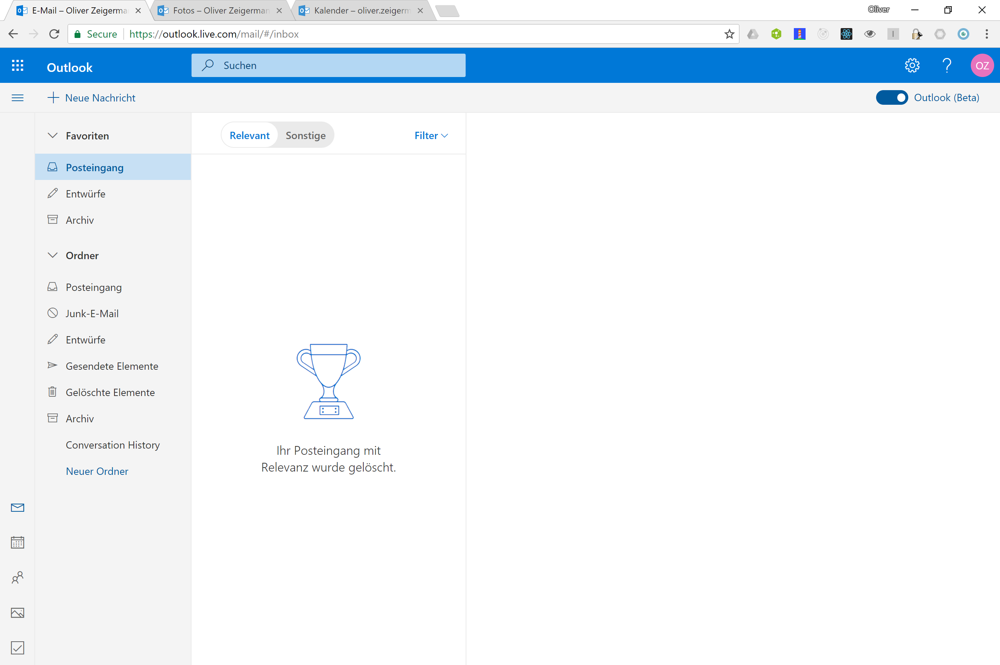
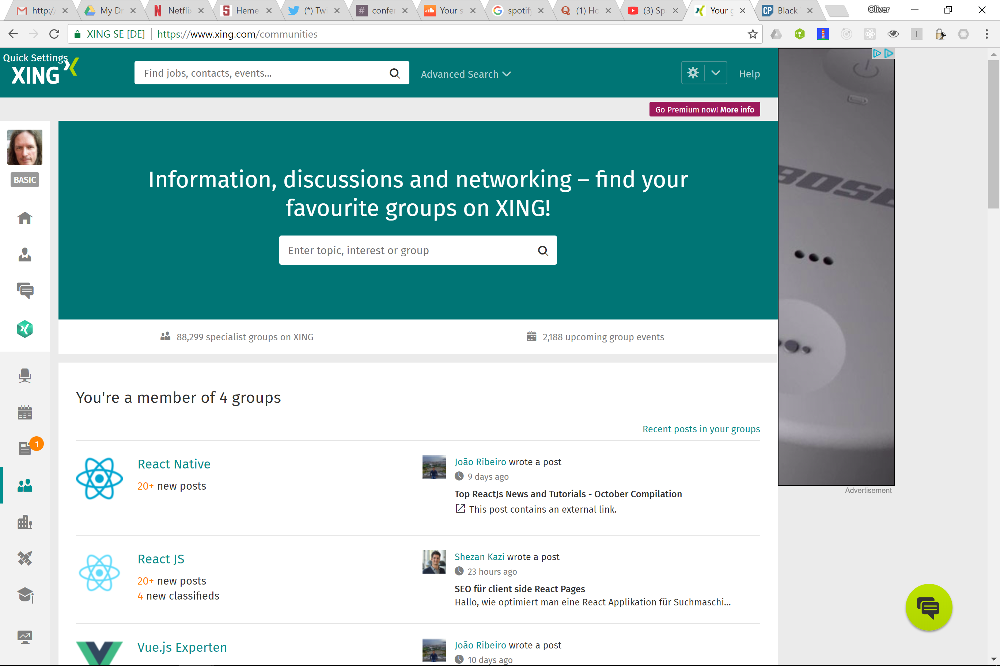

Was macht moderne (JavaScript) Frontend-Architektur so schwierig?
OOP 2018
Folien: http://bit.ly/oop-frontend
embarc GmbH
Teil 1
Im Spannungsfeld der Anforderungen
Nutzer möchten eine konsistente, gut bedienbare UI erleben

Axiom I
Beste UI / UX kann nur durch Single Page Applications (SPA), Mobile oder Desktop App erreicht werden
Logik muss nahe an Interaktion und Daten müssen nahe an Logik liegen
SPA
verschieben daher Hauptteile eurer Anwendung in den Client

- Server ist hauptsächlich Daten-Schnittstelle (JSON/REST API)
- Server kann Business Logic enthalten, diese kann aber komplett im Client liegen
- erlaubt Offline-Betrieb für SPAs (u.a. über Service Workers)
Größere Anwendungen können nicht von einem einzigen Team entwickelt werden

Axiom II
Wartbarkeit und Skalierung im größeren Kontext ist nur durch Modularisierung erreichbar
Moderne Frontends...
- sollen aus einzelnen Modulen zusammensetzbar sein
- müssen zu modernen Backend-Architekturen passen
- sollen einzeln zu deployen sein
- sollen pro Modul am besten die freie Wahl von Technologie erlauben
Das passende Buzzword dazu ist Micro Frontends ( https://www.thoughtworks.com/radar/techniques/micro-frontends )
Spannung zwischen Axiom I und II
Wenn man die Module für Wartbarkeit entkoppelt (Micro Frontends) muss man sie für ein UI aus einem Guss wieder koppeln
Das geht das nicht ohne Kompromisse
- Wo will man Abstriche machen?
- Erfahrung des Nutzers?
- Entwicklungsprozess?
https://twitter.com/missingcloudltd/status/826203153934729218
Es gibt keinen besten Architektur-Ansatz
Daher...
Man muss die Anforderungen kennen und die müssen passen.
- Oliver Zeigermann, embarc
Typische Ziele/Einflüsse
UX, Konsistenz
- Gleichzeitige, synchronisierte Darstellung mehrerer Module
- Schnelle erste Darstellung
- Offline-Fähigkeit
- Unverzögerte Reaktion
Risiko-Minimierung
- schrittweises Ausrollen von technischen Innovationen
- schrittweise Migration, kein Big Bang
- Feature-Stau
Skalierbarkeit der Entwicklung / Entwicklungsgeschwindigkeit
- Anzahl der Teams
- Freie Wahl des Frameworks
- Update der Bibliotheken
- Eignung für vertikale Architektur
- Gemeinsame Bibliothek, Wiederverwendung
- Freiheitsgrad der Modulgröße
- Migrationspfad von klassischer Web-App
Übung
Tausche dich mit deinen Sitznachbarn über dein eigenes (oder ein dir bekanntes) Frontend aus
Welche Anforderungen gibt es in dem Projekt?
Wie begegnet ihr diesen?
Teil 2
Lösungsansätze
Wir nehmen Frontend-Architektur nicht für voll
Zitate
- Frontend-Architektur: Ich dachte sowas gibt es gar nicht
- Das Frontend kloppen wir am Ende einfach irgendwie drauf
- Architektur für ein bisschen CSS-Pixel-Geschubse?

@wycats : https://twitter.com/wycats/status/930463710941872128
Micro Frontend Architektur-Ansätze
Integration...
- über Links - Codename Links
- zur Build-Zeit - Codename Majestic Modular Monoliths (Kudos an @axelfontaine für den Namen)
- im Browser - Codename Micro Components
Ansatz 1
Eigenständige Anwendungen über Links verbunden
Integration mehrerer Anwendungen über Links, die eine neue Anwendung öffnen und/oder die alte ersetzen
- jedes Modul ist eine eigene (SPA) Anwendung
- erlaubt Vertikalen wie eine klassische Web-App
- Module teilen keinen Zustand, aktualisieren einander nicht
Links
Variante: App Shell hat JavaScript Rahmen, weniger flexibel, kann aber u.a. Zustand halten
Eigenständige Anwendungen in Eigenständiger Darstellung

Jede Anwendung wird komplett neu aufgebaut
Prominentes Beispiel: Outlook Online
UX-Schwächen, unterschiedliche Technologien, jede App wird anders dargestellt
Wechsel der App dauert (Service Workers können die Zeit ab 2. Aufruf vermindern)
Technik
Kommunikation zwischen getrennten Anwendungen
Ansätze: Links
Bedient Anforderungen: nicht gleichzeitige, aber synchronisierte Darstellung mehrerer Module
Real-Time
- Long Polling: Erfordert Server Verbindung, kann viel Server Resourcen fressen
- Web Sockets: Erfordert Server Verbindung, geht immer noch nicht überall
- PWA Push: Erfordert Service Worker und Server
Parameter-Übergabe
- Cookies: gut für Session Id, Tokens
- URL Parameter: begrenzte Länge, nicht alles möchte man in der URL haben, Bookmark und verschickbarer Link möglich
- Session Storage: Key/Value, wird gelöscht wenn Tab geschlossen wird
- Local Storage: Key/Value, bleibt bestehen bis zur expliziten Löschung
Alle Ansätze halten auch bei Reload den Zustand
Ansatz 2
Single Page Application
Eine einzelne Single Page Application mit statischem Build
- Jedes Team entwickelt eigenes Modul
- Statischer Build integriert komplette Anwendung
- Zur Laufzeit Lazy-Loading möglich
- Anwendung nutzt ein Framework mit einer Version
- Gemeinsame Bibliothek sinnvoll
- Export einzelner Komponenten möglich
Majestic Modular Monoliths
Gemeinsame Anwendungen in gemeinsamer Darstellung
Server-Zugriff nur für Daten oder einmalig für Code
Prominentes Beispiel: Google Docs

Keine systematischen UX Probleme
Universal Rendering
Mit demselben Code sowohl auf dem Server vorrendern als auch im Client interaktiv sein
Ansätze: Majestic Modular Monoliths
Bedient Anforderungen: SEO, schnelle erste Page-Impression
Ansatz 3
Zusammensetzen der Anwendung im Browser
- Anwendung ist in logische Module aufgeteilt, die als ganze Anwendung zusammen laufen
- Frameworks frei wählbar pro Modul
- Gesamtanwendung wahrscheinlich groß
Micro Components
Eigenständige Anwendungen in gemeinsamer Darstellung
Jede Anwendung kann komplett eigenen Stack haben
Kommunikation über EventBus, direkte Listener oder gemeinsamer Zustand
Prominentes Beispiel: Spotify

https://www.quora.com/What-is-the-technology-stack-behind-the-Spotify-web-client/answer/Andreas-Blixt
https://www.quora.com/How-are-Spotify-Web-Player-components-developed
https://www.reddit.com/r/reactjs/comments/5sgkro/til_spotify_is_using_reactredux_in_their_web_app/
überraschende UX Schwächen, Apps nur gleichzeitig dargestellt, aber nicht komplett integriert
Migrationsszenario
Angular (Übersicht) nach React (Spielfeld und Ticker), Kommunikation über Long Polling

Technik
Client-Seitige Integration
Ansätze: Micro Components
Bedient Anforderungen: Gleichzeitige, synchronisierte Darstellung mehrerer Module
- einfache script Tags und unterschiedliche Mount Points (wie bei Sport1)
- Web Components
- iFrames
Web Components
Web Component ummantelt Modul
<script type="module" src="./my-element.js"></script>
<my-element greeting="Hello"></my-element>
Keine Komplette Isolation, funktioniert in der Praxis nicht gut mit beliebigem Framework
iFrame
Beispiel: http://djcordhose.github.io/architecture/code/integration/
Lädt komplett isolierte Anwendung
<iframe height="300" width="500"
src="http://djcordhose.github.io/architecture/code/integration/iframe.html"
sandbox="allow-scripts allow-top-navigation allow-same-origin"></iframe>
- Kein geteiltes Styling
- Einbetten mit richtiger Größe ein Albtraum
- Kommunikation mit Außenwelt lästig
Problem: Ladezeiten, wenn jedes Modul sein eigenes Framework mitbringt
- Frameworks wie React oder Angular bringen von sich aus immer mehr als 100KB mit
- (UI-)Bibliotheken haben oft dieselbe Größe oder mehr
- Bei mehreren Modulen ist man schnell im MB-Bereich: Langsamer Aufbau der Seite
Lösung: k(l)eine Frameworks und Bibliotheken nutzen
- Preact kann Anwendungen unter 10KB bringen
- Web-Components sind Teil der Browser API (noch nicht überall)
Ansätze sind nicht wechselseitig exklusiv
- Seite einer Link-App kann eine Micro Components App sein
- Teil einer Micro Components kann ein Majestic Modular Monolith sein
- Seite einer Link-App kann ein Majestic Modular Monolith sein (Google Drive vs Google Docs)
Urteil
- Links: bester Entwicklungsprozess
- beste Story für Modularisierung, Migration, Deployment
- schwächste Integration von UI/UX
- Majestic Modular Monoliths: beste Erfahrung für den Nutzer
- schwächste Story für unabhängige Teams
- bestes und konsistentestes UX/UI, starke Stories für State Management und Universal Web Apps
- Micro Components: Kompromiss
- migration von Klassischer Wep-App schwer denkbar
- UX/UI gut für Intranet oder Desktop
Empfehlung
Anwendung komplett trennen und mit Links verbinden wo möglich
Wahrscheinlich sind mehr Trennungen möglich als ihr denkt
Getrennte Anwendungen als Majestic Modular Monoliths außer wenn starke Anforderung an Unabhängigkeit
Ein Quiz
Frage 1
Wie viele Entwicklungsteams arbeiten an XING?
- 1
- 2-10
- 10-30
- >30
Antwort 1
Wie viele Entwicklungsteams arbeiten an XING?
- 1
- 2-10
- 10-30
- >30
Frage 2
Welcher Ansatz / Technik kommt bei XING nicht zum Einsatz?
- React
- Links
- Majestic Modular Monolith
- Cookies
- Micro Components
- Web Sockets
Antwort 2
Welcher Ansatz / Technik kommt bei XING nicht zum Einsatz?
- React
- Links
- Majestic Modular Monolith
- Cookies
- Micro Components
- Web Sockets
Frage 3
Wie viele Versionen von React sind hier zur selben Zeit im Einsatz?
- 1
- 2-5
- 5-10
Antwort 3
Wie viele Versionen von React sind hier zur selben Zeit im Einsatz?
- 1
- 2-5
- 5-10
Vielen Dank!
Es gibt keine perfekte Architektur für jeden Satz von Anforderungen
Du musst deine Anforderungen kennen und dabei ehrlich zu dir sein
Oliver Zeigermann / @DJCordhose / embarc GmbH